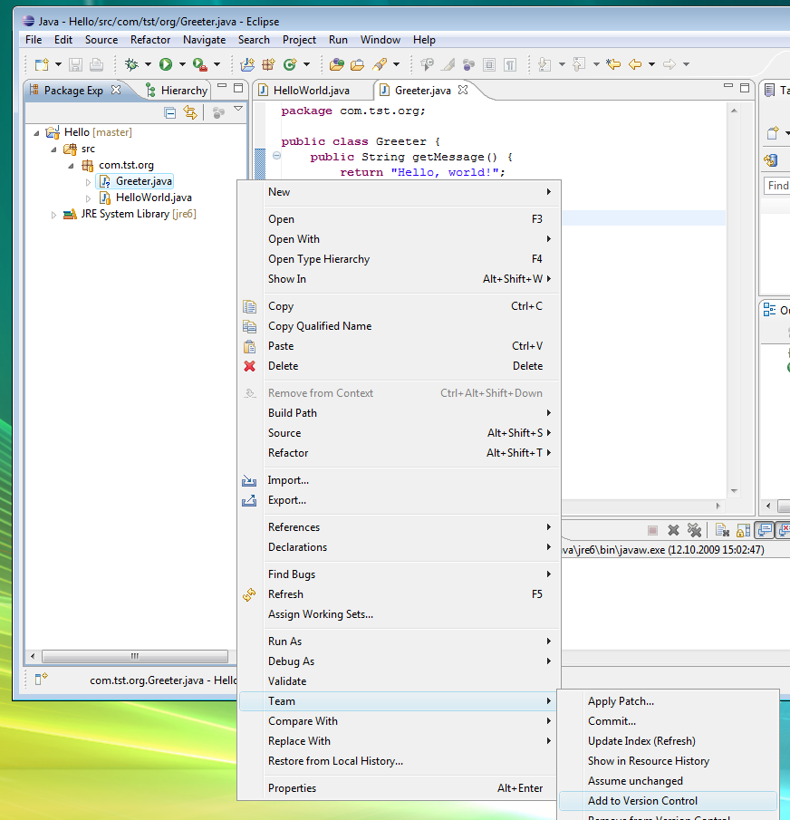
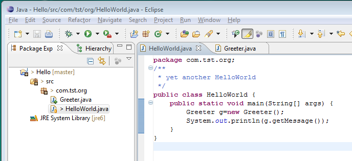
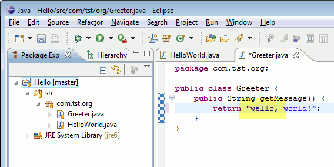
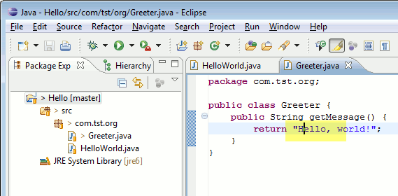

| Committing Changes | ||
|---|---|---|
|
|
|
|
| Inspecting the state of the Repository | Reverting Changes | |
Modifications to a project which is version-controlled with Git are persistently recorded in the history through commits. In Git you modify your project until you have reached a state you are satisfied with and then you commit all these changes together to the repository in one single commit.
If you have a project which is already shared with Git then doing the actual modifications is easy: just modify or delete files either within Eclipse or even directly on the file-system. There is no need to "check-out" files or to tell Git in advance about these operations. Only when adding new files you should be cautious: new files which should be version-controlled have to be explicitly put under Git version control using the file's Track menu action or immediately before a commit in the Commit dialog you may display untracked files by checking the Show untracked Files checkbox and select them for inclusion in the commit.

You can see for example in the Package Explorer View which files have been added (file icon marked with "+") and which files have been modified (file marked with ">" in front of the filename). For details see Label Decorations.
Here is an example of one added and one modified file in the Package Explorer:

When you are satisfied with the state of the project you may commit your changes. To do that select Team > Commit... from the context menu of a project or a file in the project.

It does not play a role whether you select this action on a certain file or on the whole project. The reason for this is that Git tracks all changes made to the whole repository capturing the modifications of each and every version-controlled file in that repository not regarding if these files reside in the same Eclipse project or not.
Once you have triggered the commit the following dialog will pop-up.

In this dialog you specifiy the commit message describing the change.
It is good practice to start the message with a short first line summarizing the change followed by a blank line and then the message body. In order to ensure that also git command line tools can format these messages nicely the lines shouldn't be formatted too wide.
At the end a number of footer tags may follow :
Bug: 3176 Reported-by: Joe Developer <joe@dev.org> Signed-off-by: William Shakespeare <will.from@the.past>
The semantics of these tags are project or tool specific, e.g. Gerrit Code Review uses the Change-Id: footer to correlate the different patchsets of a change evolving during the review process towards the finally accepted patch. The Signed-off-by: footer is used by many projects to create a formal track record of declarations that the signing authors contributed the changes under the project's license and IP rules. This way the IP provenance of a project's evolving code base can be captured on a technical level.
Additionally this dialog controls which of the changes will be included in the commit. If you clear the checkbox in front of a file, the changes to this file will not be included in the commit. The local file in your eclipse workspace will still contain the modifications giving you the chance to commit these changes with a subsequent commit. This feature is often used to separate modifications done to a set of files into different commits.
One example: Imagine since the last commit you have fixed a bug in A.java and you have added a new method to B.java. These two modifications are logically independent from each other hence you may want to commit them in two independant commits. In this case you initate the commit, deselect B.java from the set of committed files and specify a commit message describing only the bugfix in A.java. After a succesfull first commit you just call commit again and the upcoming dialog will present you the remaining changes in B.java. Now you specify a commit message describing the addition of the method and finish the second commit.
New files you added to the project which have not been explicitly added to version control (see "Modifying the content") will be listed in the commit dialog if you select the checkbox "Show untracked Files". If you select the checkbox in front of these files in the list they will be added to the repository and committed once you press the commit button. Files which are excluded by the team ignore list or which are derived (e.g. the bin folder in java projects) will not be shown here. If you have no other changes in your repository than such untracked files the checkbox Show untracked Files is selected by default.
When you commit you may specify that the current commit should "amend" the previous commit in the current branch. Your commit will then replace the previous commit. This feature is often use to correct wrong commits before they are published to other repositories.
Example: Imagine you have committed a change to a file containing a typo

After you committed you detect the typo. In order to correct this typo and the corresponding commit you just fix the typo in the source file

Afterwards you trigger the commit and select the option Amend previous commit.

The commit message of your previous commit (the one which you want to replace) is filled into the "Commit Message" field. This gives you the chance not only to correct errors in the content of the version-controlled files but to also correct errors (e.g. typos) in the commit message describing your change.
As an alternative to amending you could just commit the corrected version as a subsequent commit. But the first commit containing the typo is of no use to anybody else and in order not to clutter the history of your project with unneeded commits you may decide to use the amend feature.
Be aware that amending commits which are already published to other repositories may cause trouble. Once you have pushed a commit to a remote repository or your local repository was cloned by somebody else you should be very careful whith amending commits. In this case publishing a second commit which corrects the first one is probably a better solution.
Git gives you the chance to "sign off" commits. This adds a Signed-off-by: <Your Name and Email-Adress> footer to the commit message. The purpose of this signed-off-by information is not defined by Git but by the team using Git. Some teams use this information to record who has reviewed a certain commit. Other teams use the signed-off information to record that a commiter agreed to certain standards/rules. E.g. you may have to sign-off your own commits to state that you have read and understood the license-specific rules of your project.
|
|

|
|
| Inspecting the state of the Repository | Reverting Changes |